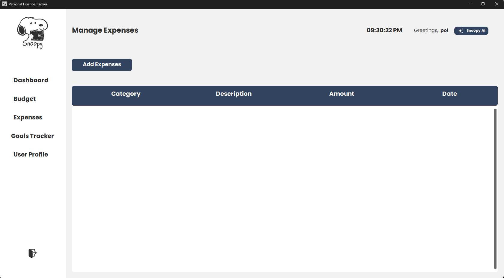
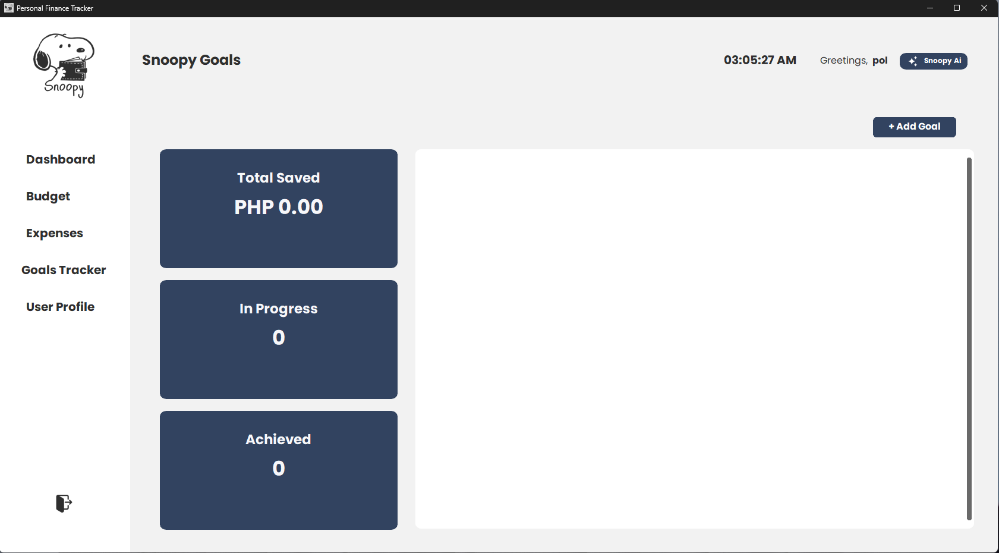
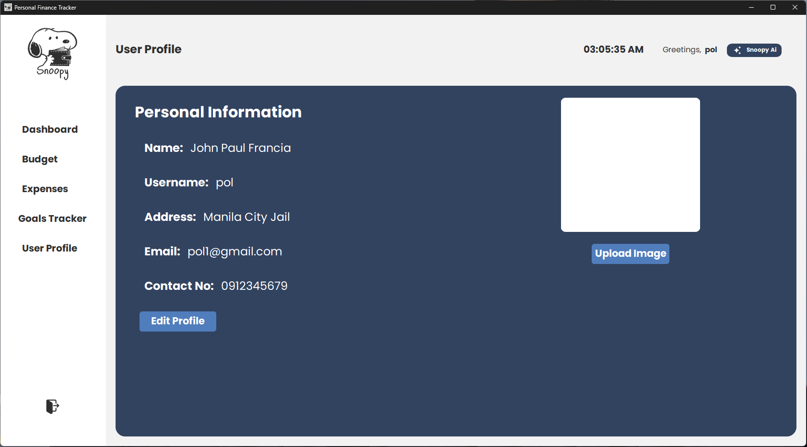
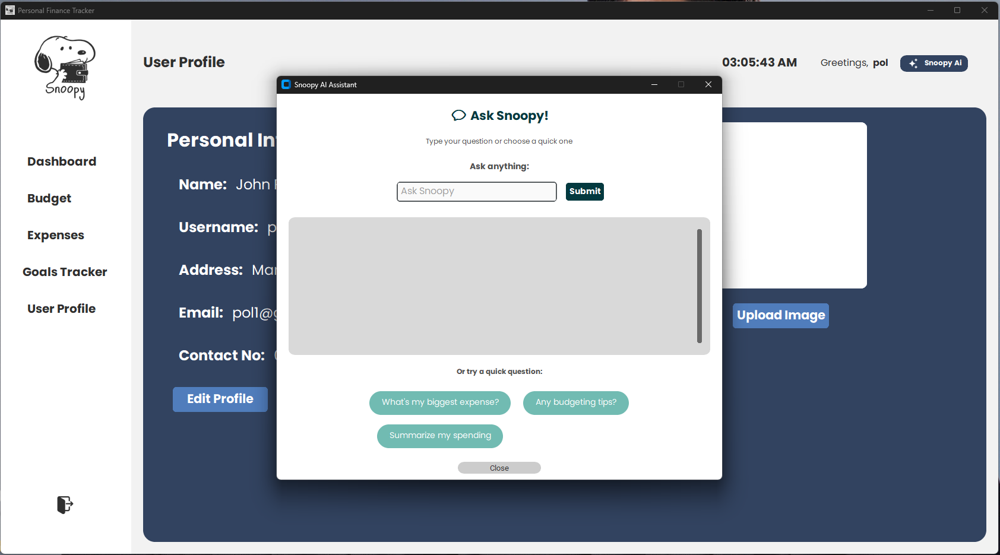

Snoopy
Developed a Personal Finance Tracker application designed to help users efficiently manage their income, expenses, budgets, and financial transactions. The application provides features for recording and categorizing financial transactions, monitoring spending, managing budgets, and viewing financial information through an intuitive dashboard. Built using Python and MySQL, the application was designed with a user-friendly interface to simplify personal financial management and make financial data easier to understand. As part of the development team, I contributed to the application’s interface, backend functionality, database integration, and implementation of its core financial management features. The project followed the Agile methodology, allowing the application to be continuously improved through iterative development, testing, and user feedback. The completed application provides an organized and convenient way for users to monitor their finances, develop better budgeting habits, and improve their overall financial awareness.
View on GitHub






Select an image to view it larger.